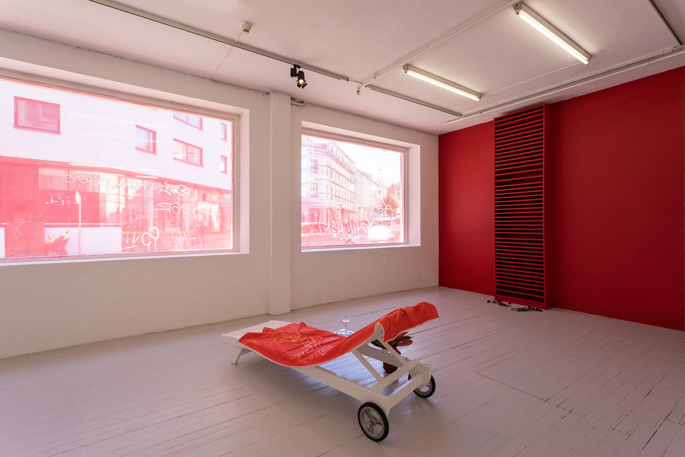
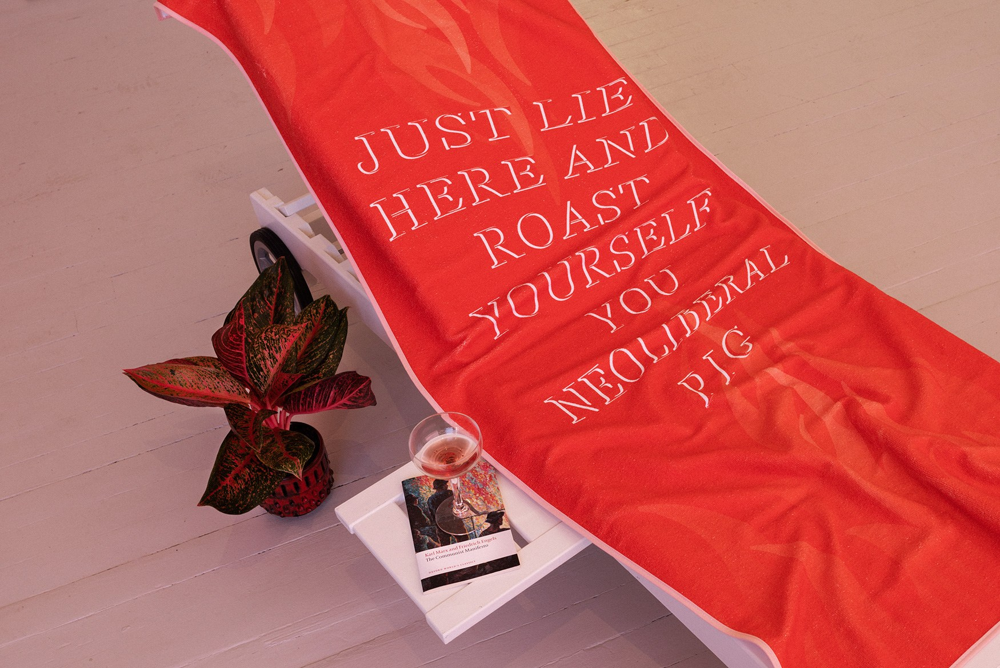
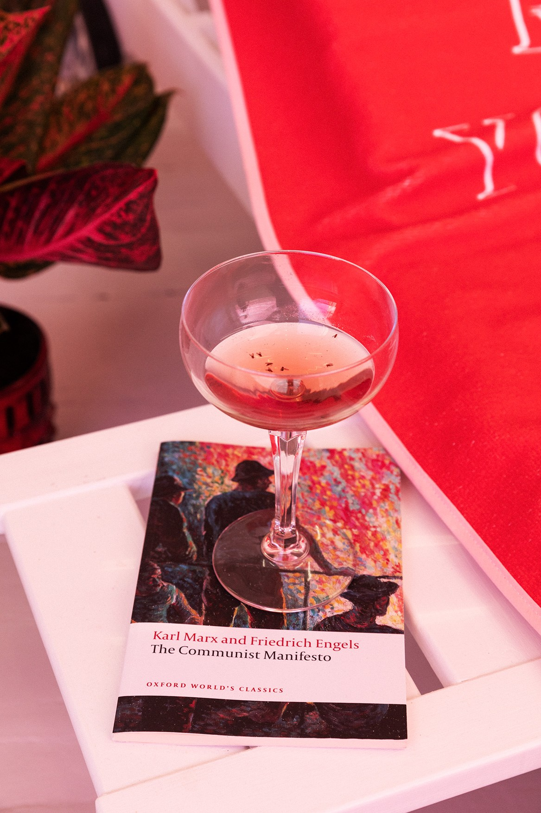
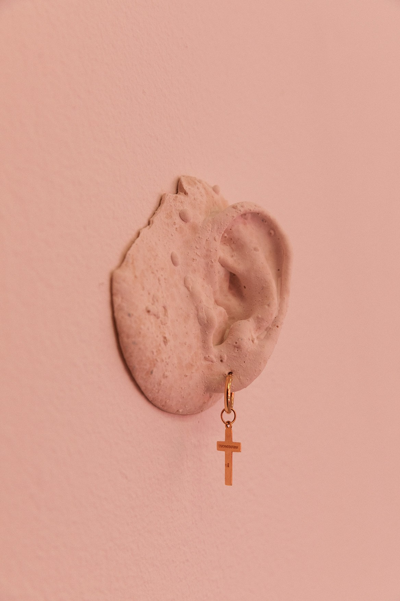
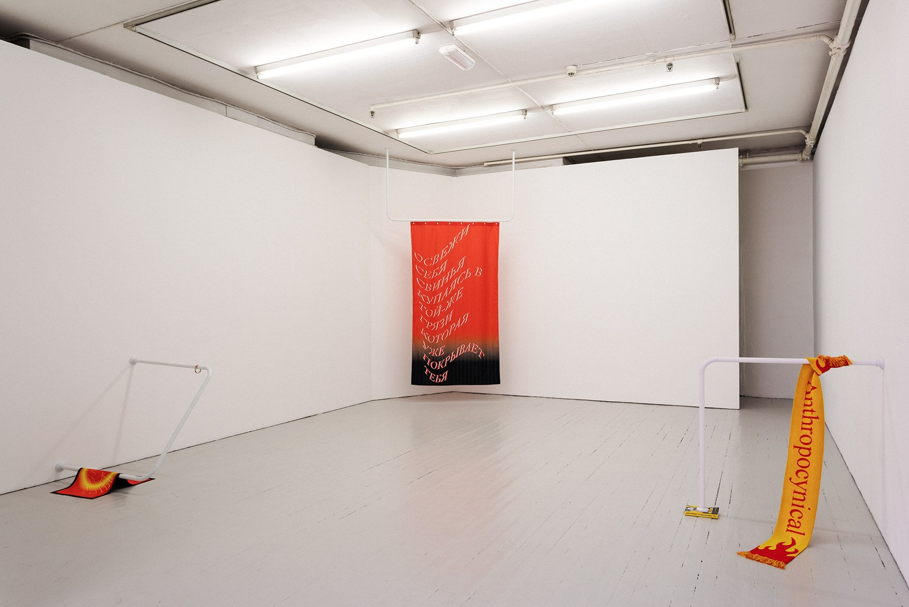
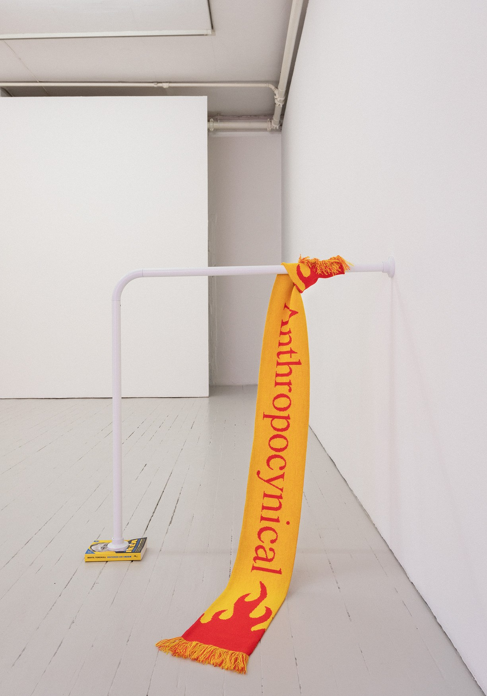
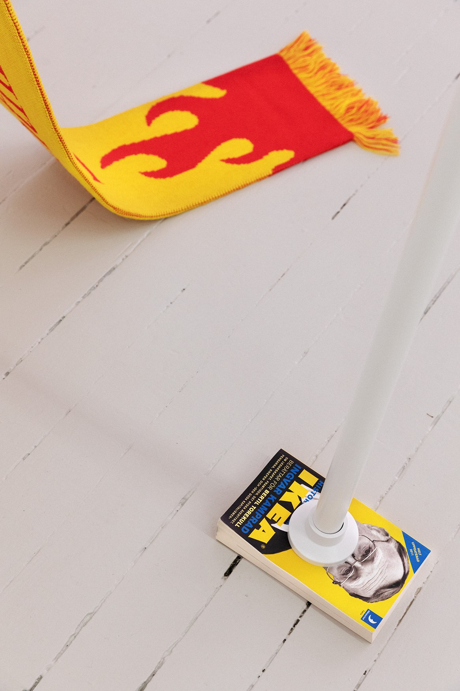

Permanent Vacation, 2020
Permanent Vacation brings leisure objects, domestic commodities, political texts and devotional symbols into a deliberately artificial holiday environment. Familiar things are displaced and recombined until comfort, ideology and spectacle begin to overlap.
Photography: Julie Hrnčířová






